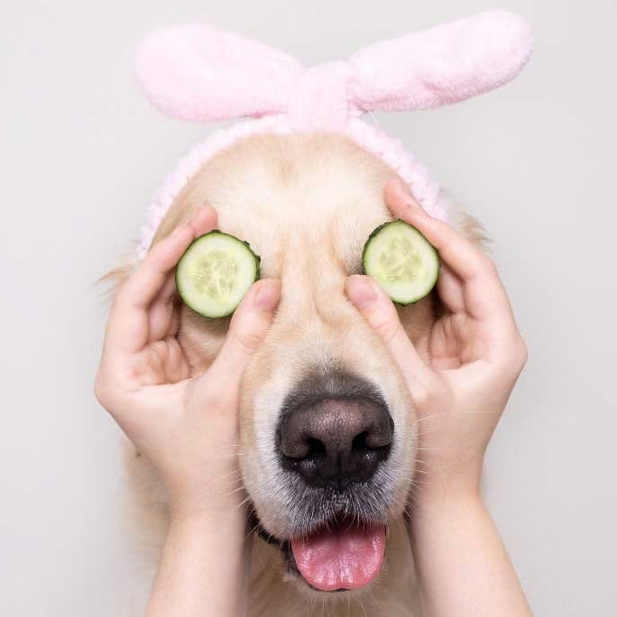

Al Agua Pato
BAÑAPERRI

quienes somos
En "AL AGUA PATO: BAÑAPERRI", estamos dedicados a brindar el mejor cuidado posible para tus fieles
compañeros caninos. Sabemos que tu perro es más que una mascota; es un miembro de tu familia. En
nuestro
salón de baño, ofrecemos una amplia gama de servicios, desde baños relajantes con productos de alta
calidad hasta cortes de pelo personalizados que realzan la belleza natural de tu mejor amigo.
También
proporcionamos servicios adicionales como corte de uñas, limpieza de oídos y cepillado dental para
mantener a tu perro saludable y feliz.
Nuestro equipo está compuesto por amantes de los animales que entienden la importancia de la
comodidad y el bienestar de tu mascota. Trabajamos con cuidado y paciencia, asegurando que tu perro
se
sienta relajado y en buenas manos durante toda la experiencia de baño. Además, nuestro salón cumple
con
los más altos estándares de higiene y seguridad para garantizar un ambiente limpio y libre de
estrés. En
"AL AGUA PATO: BAÑAPERRI", cada mascota es tratada con cariño y consideración, fortaleciendo así la
relación especial que tienes con tu perro.
En "AL AGUA PATO: BAÑAPERRI", creemos que tu perro se merece lo mejor, y estamos aquí para
proporcionarlo. Vení a visitarnos y descubrí por qué somos el destino preferido de los amantes de
los
perros en nuestra comunidad. Confía en nosotros para cuidar a tu amigo peludo como lo harías vos. Tu
perro estará en las mejores manos en "AL AGUA PATO: BAÑAPERRI".
nuestros servicios
baño y aseo general
Este servicio incluye un baño completo para el perro, que generalmente implica el lavado del pelaje con champú adecuado para su tipo de piel y pelaje. El bañador de perros se asegura de eliminar la suciedad, los olores desagradables y los posibles parásitos. También puede incluir el corte de uñas, limpieza de oídos y cepillado del pelaje para mantener al perro limpio y saludable.
peluquería canina

También ofrecemos servicios de peluquería canina, que van más allá del simple baño. Esto implica recortar, estilizar y dar forma al pelaje del perro de acuerdo con las preferencias del dueño y las necesidades de la raza. Pueden realizar cortes de pelo específicos, como el "corte de raza" para razas de perros específicas, o simplemente un corte personalizado. Esto no solo mejora la apariencia del perro, sino que también contribuye a su comodidad y bienestar.
tratamientos especiales y spa
Ofrecemos tratamientos de spa canino para mimar a tu mascota. Esto puede incluir baños relajantes con shampoos aromáticos, mascarillas faciales caninas, masajes terapéuticos y servicios de aromaterapia. Estos tratamientos no solo ayudan a que los perros se sientan mejor, sino que también pueden aliviar el estrés y la ansiedad, especialmente en perros nerviosos o con afecciones de la piel.